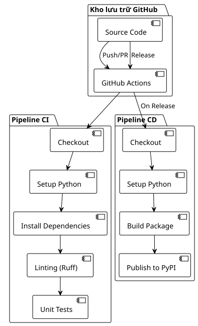

Phần 1: Thiết lập một pipeline CI/CD đơn giản cho Python và PyPI
Đăng ngày 17 July 2025
Giới thiệu
Tự động hóa các quy trình phát triển đã trở nên không thể thiếu trong các dự án hiện đại. Một pipeline CI/CD được thiết kế tốt không chỉ cho phép phát hiện sớm các lỗi hồi quy trong chu kỳ phát triển, mà còn tự động hóa hoàn toàn quy trình triển khai.
Trong bài viết này, chúng ta sẽ khám phá cách thiết lập một pipeline hoàn chỉnh với GitHub Actions cho một ứng dụng Python, từ tích hợp liên tục (CI) đến triển khai liên tục (CD) lên PyPI.
Kiến trúc Pipeline
Pipeline của chúng tôi bao gồm hai workflow riêng biệt:
-
Luồng CI (CI Pipeline): Được thực thi trên mỗi push và pull request
-
Luồng triển khai CD (CD Pipeline): Chỉ được kích hoạt khi có các bản release trên GitHub

Cấu hình Pipeline Tích hợp Liên tục (CI)
Cấu trúc của Workflow CI
Workflow CI được thiết kế để xác thực mọi đóng góp cho mã nguồn. Dưới đây là cấu hình đầy đủ của nó:
name: CI/CD Pipeline
on:
push:
branches:
- main
pull_request:
branches:
- main
jobs:
build:
runs-on: ubuntu-latest
steps:
- name: Checkout code
uses: actions/checkout@v4
- name: Set up Python
uses: actions/setup-python@v5
with:
python-version: '3.x'
- name: Install dependencies
run: |
python -m pip install --upgrade pip
pip install -r requirements.txt
pip install ruff pytest pytest-mock
- name: Run Linting (Ruff)
run: ruff check .
- name: Run Tests (Pytest)
run: pytestPhân tích các Bước CI
1. Trình kích hoạt (on)
----
on:
push:
branches:
- main
pull_request:
branches:
- main
----
Pipeline được kích hoạt khi: - Mỗi lần push lên nhánh`main` - Mỗi pull request gửi đến`main`
Cách tiếp cận này đảm bảo rằng mã nguồn chính vẫn ổn định và mọi đóng góp đều được phê duyệt trước khi tích hợp.
==== 2. Môi trường Thực thi
```yaml
----
runs-on: ubuntu-latest
----
Ubuntu Latest cung cấp một sự cân bằng tốt giữa hiệu suất, chi phí và khả năng tương thích cho hầu hết các dự án Python.
==== 3. Checkout Mã nguồn
```yaml
----
- name: Checkout code
uses: actions/checkout@v4
----
Hành động`checkout@v4`lấy mã nguồn từ repository. Phiên bản v4 mang lại những cải thiện về hiệu suất và bảo mật.
==== 4. Cấu hình Python
```yaml
----
- name: Set up Python
uses: actions/setup-python@v5
with:
python-version: '3.x'
----
Việc sử dụng`'3.x'`cho phép tự động sử dụng phiên bản ổn định mới nhất của Python 3, giúp đơn giản hóa việc bảo trì.
==== 5. Cài đặt các Dependency
```yaml
----
- name: Install dependencies
run: |
python -m pip install --upgrade pip
pip install -r requirements.txt
pip install ruff pytest pytest-mock
----
Bước này: - Cập nhật pip lên phiên bản mới nhất - Cài đặt các dependencies của dự án - Thêm các công cụ phát triển (linting và tests)
==== 6. Linting với Ruff
```yaml
----
- name: Run Linting (Ruff)
run: ruff check .
----
**Ruff**là một linter Python cực nhanh được viết bằng Rust. Nó kết hợp các tính năng của nhiều công cụ (Flake8, Black, isort) vào một công cụ hiệu suất cao duy nhất.
==== 7. Thực thi Kiểm thử
```yaml
----
- name: Run Tests (Pytest)
run: pytest
----
Pytest thực thi toàn bộ bộ kiểm thử, đảm bảo rằng các thay đổi không gây ra lỗi hồi quy.
== Cấu hình Pipeline Triển khai (CD)
=== Cấu trúc của Workflow CD
Workflow CD chỉ kích hoạt khi có các bản release trên GitHub và tự động hóa việc công bố trên PyPI:
[source,yaml]
----
name: Publish to PyPI
on:
release:
types:
- published
jobs:
deploy:
runs-on: ubuntu-latest
steps:
- name: Checkout code
uses: actions/checkout@v4
- name: Set up Python
uses: actions/setup-python@v5
with:
python-version: '3.x'
- name: Install dependencies
run: |
python -m pip install --upgrade pip
pip install setuptools wheel twine
- name: Build and publish
env:
TWINE_USERNAME: __token__
TWINE_PASSWORD: ${{ secrets.PYPI_API_TOKEN }}
run: |
python setup.py sdist bdist_wheel
twine upload dist/*
----
=== Phân tích các Bước CD
==== 1. Trình kích hoạt Release
```yaml
----
on:
release:
types:
- published
----
Pipeline CD chỉ được kích hoạt khi phát hành một bản release trên GitHub. Cách tiếp cận này đảm bảo khả năng kiểm soát chính xác các lần triển khai.
==== 2. Cài đặt các Công cụ Build
```yaml
----
pip install setuptools wheel twine
----
- **setuptools**: Các công cụ đóng gói Python - **bánh xe**: Định dạng phân phối Python hiện đại - **twine**: Công cụ bảo mật để upload lên PyPI
==== 3. Cấu hình Xác thực
```yaml
----
env:
TWINE_USERNAME: __token__
TWINE_PASSWORD: ${{ secrets.PYPI_API_TOKEN }}
----
Quá trình xác thực sử dụng một PyPI API token được lưu trữ dưới dạng GitHub secret, bảo mật hơn so với các thông tin đăng nhập thông thường.
==== 4. Build và Xuất bản
```yaml
----
run: |
python setup.py sdist bdist_wheel
twine upload dist/*
----
- `sdist`: Tạo một bản phân phối nguồn - `bdist_wheel`: Tạo một wheel (bản phân phối nhị phân) - `twine upload`: Xuất bản các bản phân phối lên PyPI
== Cấu hình Package Python
=== Cấu trúc của `setup.py
Để pipeline hoạt động, dự án của bạn phải bao gồm một tệp`setup.py`Vui lòng cung cấp văn bản cần dịch.
[source,python]
----
from setuptools import setup, find_packages
with open("README.adoc", "r", encoding="utf-8") as fh:
long_description = fh.read()
setup(
name="playlist-downloader",
version="1.0.0",
author="Votre Nom",
author_email="votre.email@example.com",
description="CLI tool for managing YouTube playlists",
long_description=long_description,
long_description_content_type="text/plain",
url="https://github.com/cheroliv/playlist-downloader",
packages=find_packages(),
classifiers=[
"Development Status :: 4 - Beta",
"Intended Audience :: Developers",
"License :: OSI Approved :: MIT License",
"Operating System :: OS Independent",
"Programming Language :: Python :: 3",
"Programming Language :: Python :: 3.8",
"Programming Language :: Python :: 3.9",
"Programming Language :: Python :: 3.10",
"Programming Language :: Python :: 3.11",
],
python_requires=">=3.8",
install_requires=[
"typer>=0.9.0",
"yt-dlp>=2023.1.6",
"google-api-python-client>=2.70.0",
"google-auth-oauthlib>=0.7.1",
"pymonad>=2.4.0",
"pyyaml>=6.0",
],
entry_points={
"console_scripts": [
"playlist-downloader=cli:app",
],
},
)
----
=== Các Điểm Chính của setup.py
1. **Siêu dữ liệu**: Tên, phiên bản, tác giả, mô tả
2. **Phụ thuộc**: Danh sách các package yêu cầu
3. **Điểm nhập**: Các lệnh CLI được cung cấp
4. **Bộ phân loại**: Siêu dữ liệu cho PyPI
== Bảo mật với GitHub Secrets
=== Cấu hình PyPI Token
1. **Tạo một API token trên PyPI**Vui lòng cung cấp văn bản cần dịch.
- Đăng nhập vào PyPI - Đi tới Account Settings > API tokens - Tạo một token mới với các quyền hạn phù hợp
1. **Thêm secret vào GitHub**Hãy cung cấp văn bản cần dịch.
Cài đặt Repository > Secrets and variables > Actions - Tạo một secret mới có tên là`PYPI_API_TOKEN` - Dán token PyPI của bạn
[plantuml, secrets-flow, svg]
----
@startuml
!theme plain
actor Developer as dev
participant "Kho lưu trữ GitHub" as repo
participant "GitHub Actions" as actions
participant PyPI
dev -> repo : Configure PYPI_API_TOKEN secret
repo -> actions : Trigger CD pipeline on release
actions -> actions : Access secret securely
actions -> PyPI : Authenticate with token
PyPI -> PyPI : Validate and publish package
note over actions, PyPI
Token không bao giờ bị lộ trong nhật ký
Có thể xoay vòng tự động
end note
@enduml
----
== Quy trình Triển khai Đầy đủ
=== Trình tự Triển khai
[plantuml, deployment-sequence, svg]
----
@startuml
!theme plain
actor Developer as dev
participant "Git cục bộ" as git
participant "GitHub" as github
participant "GitHub Actions" as actions
participant PyPI
participant "Người dùng cuối" as users
dev -> git : git tag v1.0.0
dev -> git : git push origin v1.0.0
git -> github : Push tag
dev -> github : Create release from tag
github -> actions : Trigger CD pipeline
actions -> actions : Checkout code
actions -> actions : Setup Python environment
actions -> actions : Install build tools
actions -> actions : Build distributions (sdist + wheel)
actions -> PyPI : Upload to PyPI with token
PyPI -> PyPI : Validate and publish
users -> PyPI : pip install playlist-downloader
note over dev, github
Việc tạo bản phát hành có thể được tự động hóa
hoặc thực hiện thủ công thông qua GitHub UI
end note
@enduml
----
=== Trạng thái của Pipeline
[plantuml, pipeline-states, svg]
----
@startuml
!theme plain
[*] --> Idle
Idle --> CI_Running : Push/PR created
CI_Running --> CI_Success : All checks pass
CI_Running --> CI_Failed : Linting/Tests fail
CI_Success --> Idle : Merge completed
CI_Failed --> Idle : Fix and retry
Idle --> CD_Running : Release published
CD_Running --> CD_Success : Package published
CD_Running --> CD_Failed : Build/Upload error
CD_Success --> Idle : Package available on PyPI
CD_Failed --> Idle : Fix and retry release
note on link #red : Hợp nhất các khối
note on link #green : Cho phép triển khai
@enduml
----
== Thực hành Tốt nhất và Tối ưu hóa
=== 1. Quản lý Phiên bản
Sử dụng các tag Git ngữ nghĩa:
```bash
----
git tag -a v1.2.3 -m "Release version 1.2.3"
git push origin v1.2.3
----
=== 2. Kiểm tra Ma trận
Để kiểm tra trên nhiều phiên bản Python:
```yaml
----
strategy:
matrix:
python-version: [3.8, 3.9, "3.10", "3.11"]
----
=== 3. Cache Phụ thuộc
Tăng tốc quá trình build với bộ nhớ đệm:
```yaml
----
- name: Cache pip dependencies
uses: actions/cache@v3
with:
path: ~/.cache/pip
key: ${{ runner.os }}-pip-${{ hashFiles('**/requirements.txt') }}
----
=== 4. Môi trường Triển khai
Sử dụng các môi trường GitHub để triển khai có kiểm soát:
```yaml
----
jobs:
deploy:
environment: production
runs-on: ubuntu-latest
----
== Trường hợp Sử dụng và Kiến trúc
=== Biểu đồ Ca sử dụng
[plantuml, use-cases, svg]
----
@startuml
!theme plain
left to right direction
actor "Nhà phát triển" as dev
actor "GitHub Actions" as ga
actor "Người dùng cuối" as user
package "Hệ thống CI/CD" {
usecase "Chạy Linting" as lint
usecase "Thực thi kiểm thử" as test
usecase "Xây dựng gói (Build Package)" as build
usecase "Xuất bản lên PyPI" as publish
usecase "Tạo bản phát hành" as release
}
dev --> lint : Pushes code
dev --> test : Pushes code
dev --> release : Creates release
ga --> build : On release trigger
ga --> publish : After successful build
user --> publish : Downloads package
lint .> test : triggers
test .> build : on success
build .> publish : on success
@enduml
----
=== Kiến trúc Triển khai
[plantuml, deployment-architecture, svg]
----
@startuml
!theme plain
cloud "GitHub" {
[Source Repository]
[GitHub Actions]
[Secrets Store]
}
cloud "PyPI" {
[Package Registry]
[Distribution Files]
}
node "Luồng CI/CD" {
[Linting]
[Testing]
[Building]
[Publishing]
}
[Source Repository] --> [GitHub Actions] : Triggers
[GitHub Actions] --> [Linting]
[Linting] --> [Testing]
[Testing] --> [Building]
[Building] --> [Publishing]
[Publishing] --> [Package Registry] : Uploads
[Secrets Store] --> [Publishing] : Provides token
note as N1
Xác thực dựa trên token bảo mật
end note
[Secrets Store] .. N1
@enduml
----
== Giám sát và Gỡ lỗi
=== Nhật ký và Giám sát
GitHub Actions cung cấp nhật ký chi tiết cho mỗi bước. Để gỡ lỗi:
1. **Kiểm tra các logs**của mỗi `step
2. **Kích hoạt debug**với`ACTIONS_STEP_DEBUG`
3. **Sử dụng các artifact**để lưu các tệp build
```yaml
----
- name: Upload build artifacts
uses: actions/upload-artifact@v3
if: failure()
with:
name: build-logs
path: build/
----
=== Thông báo
Thêm thông báo Slack hoặc email:
```yaml
----
- name: Notify on failure
if: failure()
uses: 8398a7/action-slack@v3
with:
status: ${{ job.status }}
webhook_url: ${{ secrets.SLACK_WEBHOOK }}
----
== Kết luận
Việc thiết lập một pipeline CI/CD mạnh mẽ với GitHub Actions thay đổi hoàn toàn trải nghiệm phát triển. Bằng cách tự động hóa linting, kiểm thử và triển khai, bạn sẽ:
- **Giảm thiểu sai sót**trên môi trường production - **Tăng tốc các chu kỳ**phát triển - **Cải thiện sự tin cậy**trong các bản release của bạn - **Thúc đẩy sự cộng tác**theo nhóm
Pipeline này có thể được điều chỉnh cho các loại dự án Python khác nhau bằng cách thay đổi các công cụ linting, framework kiểm thử hoặc điểm đến triển khai.
Khoản đầu tư ban đầu vào việc thiết lập các workflows này sẽ nhanh chóng được hoàn vốn nhờ vào việc tiết kiệm thời gian và giảm thiểu các lỗi thủ công trong quá trình triển khai.
== Tài nguyên Bổ sung
- https://docs.github.com/en/actions[Tài liệu GitHub Actions] - https://packaging.python.org/[Hướng dẫn Đóng gói Python] - https://docs.pytest.org/[Tài liệu Pytest] - https://docs.astral.sh/ruff/[Tài liệu Ruff] - https://twine.readthedocs.io/[Tài liệu Twine]
✅ Đã đạt được Pipeline hoạt động! Giờ đây bạn đã có một pipeline CI/CD đơn giản cho phép tự động hóa các bài kiểm tra và xuất bản package Python của mình lên PyPI trực tiếp từ GitHub Actions.
Tuy nhiên, pipeline này vẫn được giữ ở mức tối giản một cách có chủ đích. Nó hiện chưa bao gồm một số khía cạnh thiết yếu trong bối cảnh chuyên nghiệp:
Kiểm tra đa phiên bản Python,
Phân tích bảo mật tự động,
Triển khai dần dần thông qua Test PyPI,
Giám sát và số liệu của pipeline,
Tự động hóa việc đánh số phiên bản và tích hợp các thực hành hiện đại (`pyproject.toml`).
Trong phần tiếp theo, chúng ta sẽ tiến lên một bước cao hơn. Bạn sẽ học cách biến pipeline cơ bản này thành một chuỗi triển khai công nghiệp thực thụ, mạnh mẽ và bảo mật, sẵn sàng cho các dự án Python trong môi trường production.